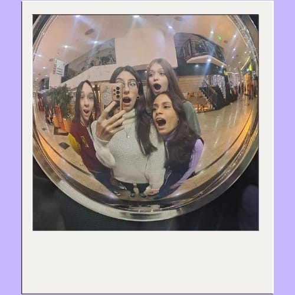
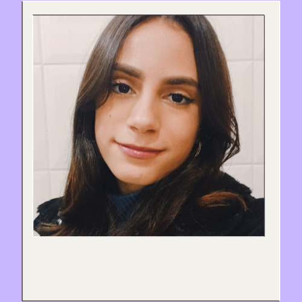
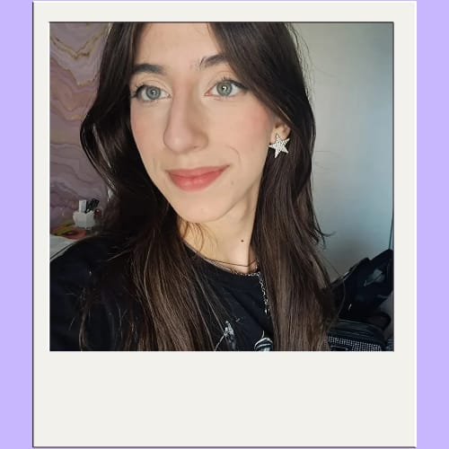
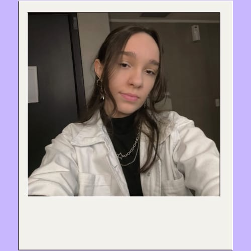
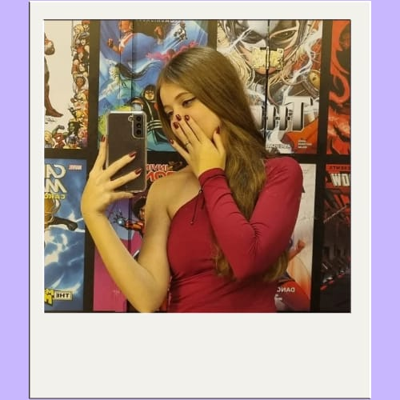

Nosso site tem a função de indicar coisas que gostamos, com as categorias de: filmes, livros, séries, jogos, cantores, desenhos e animes. É um site interativo para as pessoas descobrirem categorias novas, verem comentários anônimos junto com os nossos para terem uma imersão do que preferem assistir. Leia nossas biografias e veja com quem você se identifica mais para ver as indicações especialmente para você. <3
◈ ━━━━━━━ ◆ ━━━━━━━ ◈
Sobre nós
◈ ━━━━━━━ ◆ ━━━━━━━ ◈

Nos conhecemos em 2023 no Colégio Objetivo, mas nos aproximamos mais no final desse mesmo ano. Um dia no recreio, jogamos uno juntas e desde então nos tornamos inseparáveis. Marina e Luiza se conhecem desde bem pequenas pois estudavam juntas e acabaram indo para o mesmo colégio porque no antigo não havia ensino médio. Nós temos certos gostos favoritos, que ajudam na sincronização da nossa amizade!
◈ ━━━━━━━ ◆ ━━━━━━━ ◈
Letícia
◈ ━━━━━━━ ◆ ━━━━━━━ ◈

Me chamo Letícia, tenho 17 anos, eu gosto de escutar músicas, ver filmes e séries, minha matéria favorita é inglês e eu faço curso de inglês fora da escola.
◈ ━━━━━━━ ◆ ━━━━━━━ ◈
Lorena
◈ ━━━━━━━ ◆ ━━━━━━━ ◈

Me chamo Lorena, tenho 17 anos e eu amo escutar todos os tipos de música, desenhar, ler e assistir filmes diferentes, minha matéria favorita é história, amo saber sobre todos os fatos sobre todas as coisas, sou muito preocupada com beleza, saúde e estudos. Estou fazendo um estágio na faculdade da Unisantos pois pretendo cursar direito, porém o que mais me interessa na verdade é a área da comunicação.
◈ ━━━━━━━ ◆ ━━━━━━━ ◈
Luiza
◈ ━━━━━━━ ◆ ━━━━━━━ ◈

Me chamo Luiza e tenho 16 anos! Eu amo ler, ouvir música, jogar e desenhar. Ando gostando muito de livros de mitologia grega, mas meu favorito é O triângulo das Bermudas, de Charles Berlitz, meus cantores favoritos são TheWeeknd e Harry Styles. Adoro a série Ordem Paranormal e tenho as duas HQs (alguém de bom coração compra pra mim a terceira) 🤓☝️ . O jogo que eu mais ando jogando é Valorant (infelizmente)... Estou aprendendo a programar HTML, CSS e JS, já fiz curso de primeiros socorros, estou fazendo Expedição Científica na Unisantos e sou Filha de Jó.
◈ ━━━━━━━ ◆ ━━━━━━━ ◈
Marina
◈ ━━━━━━━ ◆ ━━━━━━━ ◈

Me chamo Marina e tenho 17 anos. Meus hobbies são ouvir música, assistir filmes/ desenhos/séries e ler. Sonho em ser veterinária desde que me conheço por gente e hoje em dia estou quase concluindo o curso de auxiliar de veterinário. Pretendo começar a faculdade o mais cedo que eu puder.